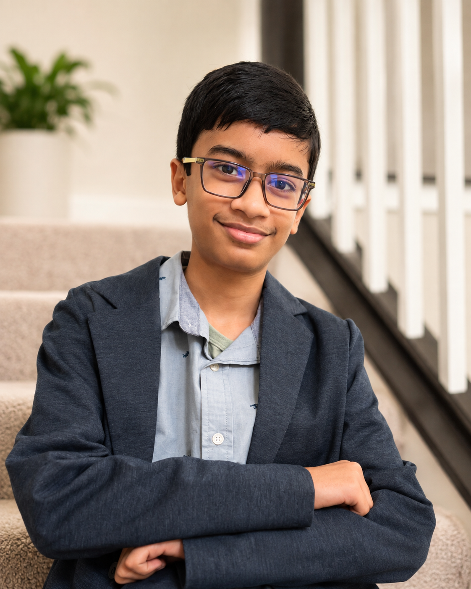

CURRICULUM VITAE
Om Chatterjee
Student builder exploring science, engineering, artificial intelligence, robotics, mathematics, and chess.

Profile
I am a curious and motivated student who enjoys exploring ideas, learning through experience, and taking on challenges that require both creativity and persistence. Whether I am studying, building, competing, or helping others, I look for opportunities to understand how things work and turn that understanding into meaningful progress.
Education
Student, 8th Grade
2026–2027My academic focus is on challenging myself through advanced mathematics, science, and English while developing a strong foundation in STEM.
Coding
Competitive Programming
C++·Python·AlgorithmsI first became interested in coding in sixth grade while using Python to build small robotics projects. What began as a way to control and experiment with hardware grew into a broader interest in algorithms, problem solving, and AI/ML. I have developed projects including TankFlare, an AI-powered web application, and a personalized allergy prediction system that uses a trained neural network. I later began competing in USACO, using C++ to work through increasingly challenging programming problems and advancing from Bronze to Silver. My interest in competitive programming also led me to Codeforces, where I currently compete at the Pupil level as overflux.
Robotics
Hands-on engineering
Python · HardwareMy interest in robotics began in seventh grade and has grown into one of my strongest areas of curiosity and independent learning. Through designing and building projects such as my Autonomous Car and Whispering Hat, I have gained hands-on experience with CAD design, soldering, electronics, sensors, hardware integration, and programming. Working with Python libraries and hardware interfaces taught me how software can interact with sensors, cameras, motors, and other electronic components to create complete working systems. These projects have encouraged me to explore robotics more deeply, troubleshoot real engineering problems, and pursue my next goal of exploring swarm robotics, inspired by the idea of many small robots working together as a coordinated system.
Chess
Competitive chess
USCF 1800+ · Lichess 2000+Chess has become one of my strongest interests and one of the main ways I challenge myself outside the classroom. I have competed in and won multiple tournaments, reached a USCF rating above 1800 and a Lichess rating above 2000, and continue to study the game through regular competition and analysis.
Giving Back
Sharing skills and opportunity
Community · SocietyGiving back has become an important way for me to share my interests with others, especially through chess. I introduced and teach chess at a school in Tanzania, work with children from a refugee camp in Uganda, and volunteer with children and families at Ronald McDonald House in Columbus. These experiences have shown me that meaningful service can begin by sharing a skill or passion in a way that creates opportunity, confidence, and connection for others.
Showcase Projects
Personalized Allergy Prediction
Science · MLDeveloped an early-warning system that combines pollen, weather, air quality, sensor-collected indoor dust particles, and personal symptom history. Trained a neural network to estimate the probability of allergy symptoms occurring the following day.
Whispering Hat
Engineering · AIDeveloped an offline assistive wearable that helps visually impaired users navigate with AI models, cameras, and sensors for obstacle detection, familiar-person recognition, emotion interpretation, and visual explanations. Voice commands control its hands-free operating modes, while the offline design avoids Wi-Fi and cloud services.
TankFlare
Web · AIDeveloped TankFlare, an AI-assisted freshwater aquarium platform that helps hobbyists make safer fishkeeping decisions through compatibility checks, aquarium tracking, and aquascape planning. I am also working with Fit's Fish Pond to improve their customer journey by applying my interests in AI, web development, and aquariums.
Autonomous Car
Robotics · AIAutonomous Car is a Raspberry Pi-powered robotics project I built to explore computer vision, sensors, and autonomous navigation. Using a camera, ultrasonic sensors, servos, and motor-control electronics, the car can detect free space, avoid obstacles, follow paths, and make movement decisions in real time. Building it gave me hands-on experience with Python, OpenCV, electronics, motor control, sensor integration, and debugging complete robotic systems.
Recognition
2026 Indianapolis Chess Open
August 23, 20263rd in the U2100 section.
NY Times Highlight Article
June 4, 2026Selected for publication as a highlight article in The New York Times 2026 Student Reading Challenge.
Ohio State Science Fair
May 16, 2026For the Personalized Pollen Prediction System: Superior rating, invitation to Thermo Fisher Scientific Junior Innovation, Ohio Environmental Health Association Award, and Naval Science Award.
2026 Cincinnati Chess Open
April 10, 2026Section Champion, U1901.
USACO Silver Promotion
January 12, 2026Promoted from USACO Bronze to USACO Silver.
MATHCOUNTS Olentangy District
January 11, 20262nd in Countdown and 6th overall; top individual performer at Hyatts Middle School.
MOEMS, Division M
October 2025Mathematics competition result: score of 24/25 and Gold Pin Winner, awarded to the top 2% worldwide.
2025 Ohio Chess Congress
August 31, 2025Section Champion, U1900.